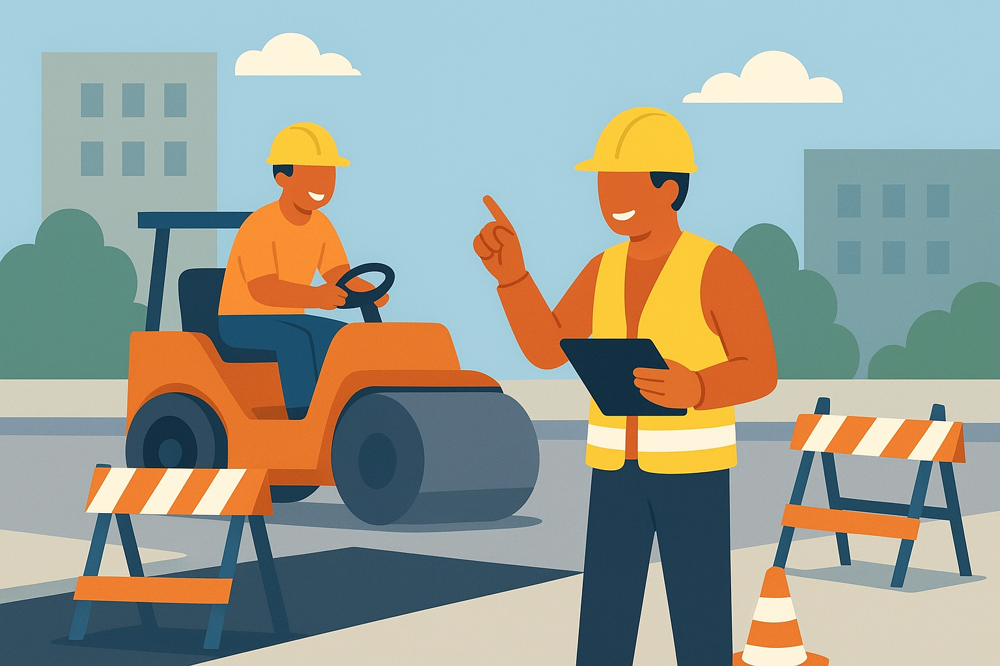
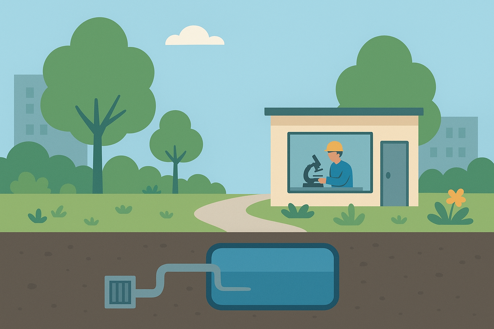
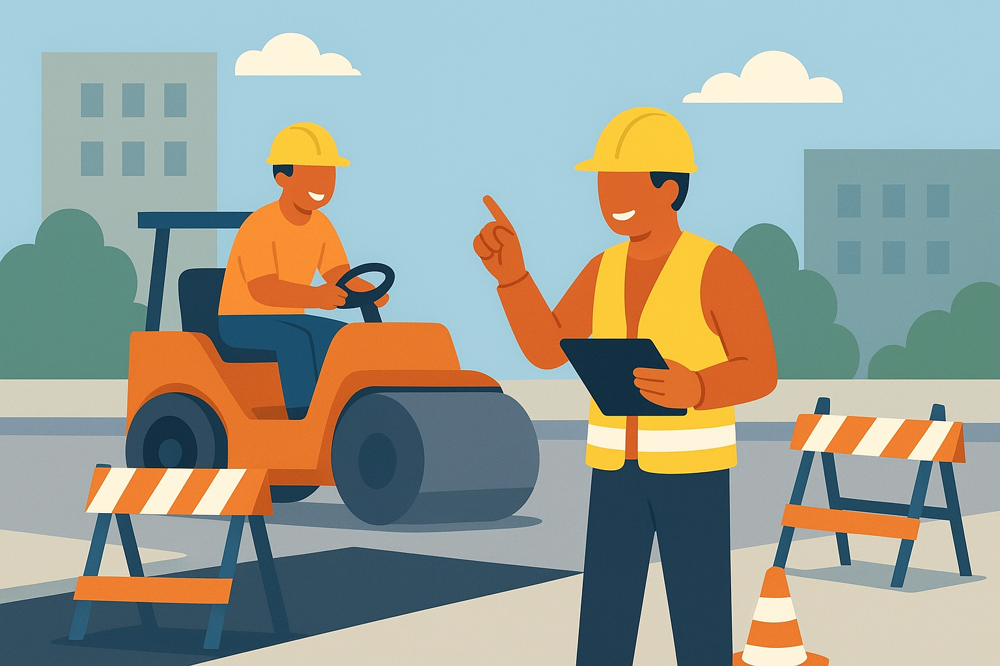
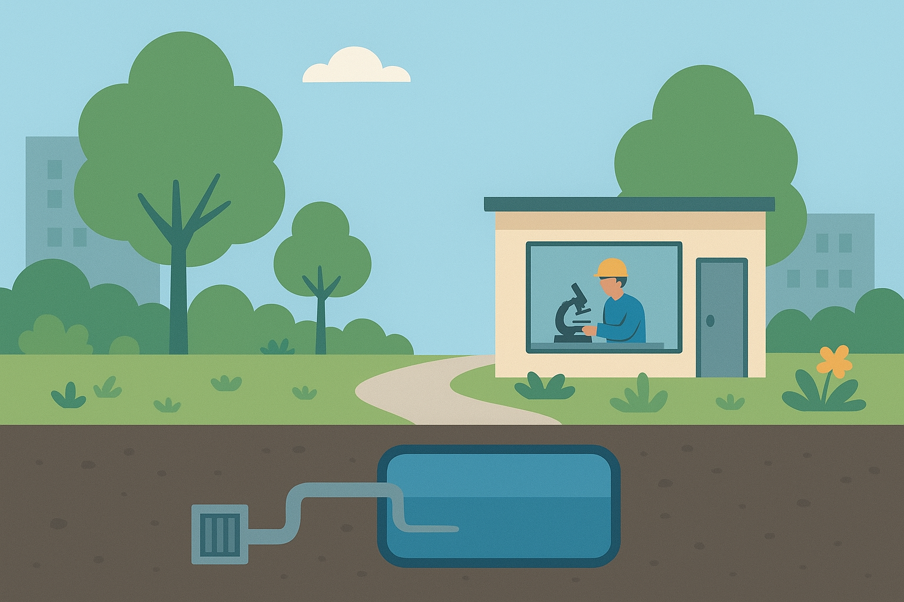
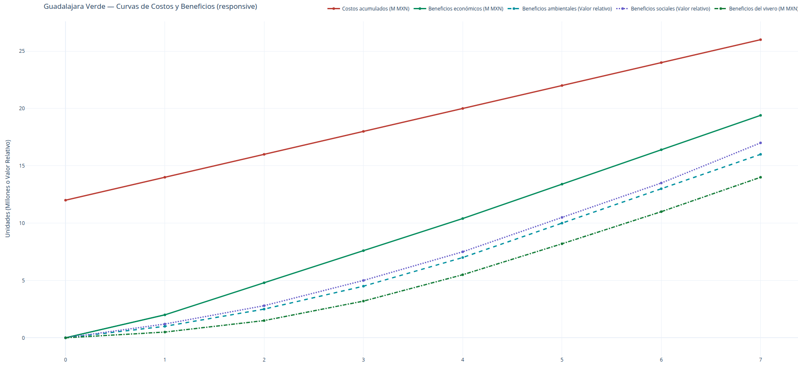

Transformando espacios, fortaleciendo comunidad
Guadalajara Verde surge como una respuesta a los retos que impone el entorno urbano actual. Las intensas lluvias y la necesidad de adaptar la infraestructura nos han llevado a integrar soluciones que priorizan la resiliencia y la habitabilidad. La presencia del arbolado y las áreas verdes no son un fin en sí mismo, sino una consecuencia natural de diseñar una ciudad más preparada, eficiente y humana.

Proyecto Actual
El proyecto actual de Guadalajara Verde es una intervención urbana diseñada para disminuir los efectos de las lluvias en la zona de Mexicaltzingo, donde las inundaciones afectan la movilidad, la seguridad y la vida cotidiana. El proyecto integra tres soluciones compatibles que funcionan como un sistema de manejo de agua y mejora ambiental:
- Asfalto permeable: Implementación de superficies diseñadas para permitir que el agua se filtre hacia el subsuelo. Esto disminuye los encharcamientos, evita que los peatones queden atrapados en el flujo de agua y mejora el drenaje natural del área.
- Inclusión y ampliación de áreas verdes: Colocación de jardineras, vegetación y microparques en zonas donde actualmente no existen, como tramos del camellón de Mexicaltzingo y terrenos abandonados cercanos. Las áreas verdes ayudan a absorber parte del agua, reducen la velocidad del flujo superficial y aportan beneficios térmicos y estéticos a la comunidad.
-
Depósito subterráneo de captación: Construcción de un gran depósito subterráneo en el punto donde converge la mayor parte del flujo pluvial.
Este depósito puede utilizarse para:
- Filtrar y potabilizar el agua.
- Estudiarla en laboratorio directamente en el sitio.
- Destinarla a usos industriales y así disminuir la demanda de agua potable.
Galería 1

Objetivos
1. Movilidad
Priorizar mediante mitigación de flujos pluviales, tránsido adecaudo de vías peatonales y ciclovías seguras conectadas con transporte público.
2. Inclusión social
Adecuación correcta de espacios accesibles para todas las edades y capacidades.
3. Economía local
Tener impacto positivo en la ya existente industria local, ya que esta área es constantemente transitada por trabajadores de este rubro, así como la integración de nuevos empleos.
4. Sostenibilidad
Aprovechar las condiciones climáticas para integrar soluciones naturales. La gestión del agua y el uso de materiales permeables para fortalecer la infraestructura y generar espacios más frescos y resilientes.
Plan Urbano
Presentamos intervenciones escalonadas: 1) diagnóstico y participación, 2) prototipos en espacios piloto, 3) escalado y mantenimiento comunitario.
Fase 1 — Diagnóstico
Mapeo de arbolado, vulnerabilidad y flujos de movilidad.
Fase 2 — Pilotos
Intervenciones temporales para evaluar impacto y adaptación.
Fase 3 — Escalado
Implementación gradual y formación de comunidades cuidadoras.
 



Año 1 y 2: la resistencia y la prueba
Los primeros años serían los más duros. La gente siempre se queja de las obras y muchos no entienden el valor hasta que lo viven.
Seguramente habría:
- molestias por excavaciones
- dudas sobre el asfalto permeable
- resistencia de comercios cercanos
- trámites y permisos lentos
Aun así, se vería el primer impacto: menos encharcamientos puntuales y un cambio visual leve con las áreas verdes nuevas.
Año 3 a 5: los beneficios empiezan a mostrarse
Aquí ya se siente el cambio real.
- Las inundaciones fuertes bajan de frecuencia.
- Los peatones dejan de quedar atrapados en esas corrientes desagradables.
- Zonas grises cambian de "puro concreto muerto" a un eje verde.
- Los depósitos empiezan a demostrar su valor, sobre todo si se usa el agua captada.
La narrativa pública cambia. La gente pasa de “qué molestia” a “estuvo bien que lo hicieran”.
Año 3 a 5: los beneficios empiezan a mostrarse
En este punto, el proyecto ya tendría impacto medible, y totalmente defendible ante una autoridad o una institución académica.
Después de siete años, se vería:
- una reducción clara en daños por lluvias
- calles más seguras para peatones
- uso efectivo del agua captada
- más vegetación, lo que reduce calor en la zona
- una imagen urbana más digna y eficiente
- un modelo replicable en otras zonas de Guadalajara
Riesgos
Como todo proyecto, este cuenta con sus propios riesgos:
-
Resistencia Institucional
-
Costos iniciales altos
-
Falta de mantenimiento sostenido
-
Falta de evidencia local
-
Resistencia vecinal
- las obras
- el tráfico temporal
- el miedo a que los depósitos subterráneos “huelan”, “se llenen de basura” o “atraigan inseguridad”
-
Intereses inmobiliarios
-
Cambios de administración
El mayor obstáculo no es técnico, es político. Obras de drenaje alternativo, pozos y cambios en la vía pública requieren permisos de varias dependencias que no siempre se coordinan bien. Riesgo: retrasos largos, recortes o cancelación parcial.
El asfalto permeable, la excavación profunda y los sistemas de filtrado cuestan más al inicio que las soluciones tradicionales. Riesgo: que el proyecto sea descartado por “caro”, aunque a largo plazo sea más eficiente.
Este es crítico. Sin mantenimiento, incluso el asfalto permeable se tapa, las áreas verdes mueren y los depósitos se vuelven inservibles. Riesgo: que el proyecto se degrade y la gente diga que “no funcionó”.
Aunque estas tecnologías funcionan en otros países, México tiene pocos casos a gran escala. Riesgo: desconfianza técnica por parte de autoridades o inversionistas.
A algunos vecinos les va a incomodar:
Riesgo: protestas o presión social que obligue a modificar tramos.
Regiones como Mexicaltzingo tienen presión de desarrolladores. Lo verde y peatonal a veces entra en conflicto con proyectos que buscan más pavimento y más flujo de coches. Riesgo: que quieran limitar el proyecto para facilitar futuras construcciones.
Cada tres años cambia la visión del gobierno. Riesgo: una administración apoya la obra, la siguiente la olvida o la abandona.
Empleos y ahorros e infraestructura como medida de mitigación
-
Empleos durante la obra
- obreros especializados
- albañiles
- operadores de maquinaria
- personal de topografía
- ingenieros civiles y ambientales
- supervisores de obra
-
Empleos permanentes después de la construcción
- Operación de los depósitos
- técnicos de planta
- operadores de sistemas de filtrado
- laboratoristas
- supervisores de control de calidad del agua
- personal de mantenimiento electromecánico
- Áreas verdes y jardines
- jardineros
- personal de riego
- viveros asociados
- mantenimiento paisajístico
- poda y control biológico
- Asfalto permeable/li>
- equipos especializados en limpieza y desazolve ligero (este tipo de suelo requiere limpieza periódica para no taparse)
- inspectores de superficie
- pequeñas cuadrillas de mantenimiento
-
Empleo indirecto
- proveedores de plantas
- talleres de metal y concreto
- laboratorios externos
- empresas de transporte
- pequeños comercios beneficiados por más movimientos en la zona
Estos son directos, inmediatos y fáciles de justificar:
Esto significa que la zona recibe una derrama económica fuerte durante varios meses.
Aquí está el verdadero valor a largo plazo:
Este siempre se nota, aunque no todos lo ven:
El proyecto no solo mejora la ciudad, también sostiene una microeconomía urbana.
Cómo se vería esto tras 7 años
Si Guadalajara Verde se mantiene, se convierte en un polo de empleo estable. La zona pasa de ser un punto de inundación crónica a un corredor verde administrado, con personal permanente. Eso genera arraigo, reduce vandalismo y mejora la percepción de seguridad.
Mensaje central
Un proyecto que limpia, protege, captura agua, enfría la ciudad y genera trabajo estable es casi imposible de atacar desde un punto de vista social.
Primer mes de Guadalajara Verde
Primer mes: lluvias intensas y cargadas
Semana 1: Diagnóstico en campo durante lluvia
Se aprovecharía desde un corto periodo antes de las lluvias, y luego durante sus inicios, como un laboratorio natural. Se hacen actividades clave:
- mediciones del flujo real en Mexicaltzingo
- registro de puntos exactos donde el agua se estanca
- trazado preliminar de rutas de captación
- inspección de drenajes existentes (muchos estarán bloqueados)
- levantamientos topográficos acelerados
Esto nos da un mapa vivo del comportamiento del agua. Es oro.
Con fondos ilimitados, contratamos de inmediato un equipo robusto para medir y documentar.
Resultado de la semana 1: ya sabemos con presición dónde intervenir primero.
Semana 2: Gestión de permisos y comunicación vecinal
Aunque los fondos sobran, los permisos no se aceleran mágicamente. Lo que sí puedes acelerar es:
- estudios de impacto
- planos técnicos
- simulaciones de flujo
- entrega de documentación completa sin errores
Además, aquí inicia algo crítico: hablar con los vecinos.
- instalación de lonas explicativas
- mini-reuniones informativas
- aclarar que no habrá cierres completos al inicio
- establecer canales de quejas y contacto
Si no se hace esta parte, el proyecto empieza mal.
Resultado de la semana 2:
la gente sabe que “algo grande viene”, pero no está en contra.
Semana 3: Preparación del terreno y compra de materiales
Aún sin romper pavimento, ya se puede avanzar muchísimo:
- colocación de señalización preventiva
- entrega de maquinaria
- perforaciones exploratorias pequeñas
- pruebas de infiltración para el asfalto permeable
- selección del punto exacto para el depósito
Con fondos ilimitados, podemos adquirir:
- lotes de asfalto permeable
- geotextiles
- sistemas modulares para pozos de captación
- plantas jóvenes para áreas verdes
- equipo de laboratorio
Resultado de la semana 3:
la zona empieza a verse “previa a obra”, pero sin caos.
Semana 4: Inicio físico de la obra en puntos estratégicos
Aquí empieza lo visible y ruidoso:
1. Intervenciones mínimas pero claves
- abrir zanjas lineales pequeñas en áreas seleccionadas
- comenzar a retirar tramos muy deteriorados de pavimento
- delimitar el perímetro donde irá el depósito
- instalar barreras de contención para dirigir mejor el flujo
2. Ensayo del asfalto permeable
Se pavimenta un tramo piloto (20–40 metros lineales) para observar el comportamiento del agua de lluvia.
3. Colocación inicial de áreas verdes
- primeras jardineras
- plantas resistentes a humedad
- sustratos drenantes
Los vecinos empiezan a decir: “Bueno… al menos se ve bonito.”
4. Contratación de personal local
- jardinería
- limpieza
- auxiliares de obra
- seguridad de perímetros
- logística
Resultado de la semana 4:
el proyecto ya es real, ya huele a construcción y a cambio.
Conclusión del Primer Mes
Tras cuatro semanas de trabajo continuo, ya se siente el rumbo del proyecto:
- diagnósticos completos aprovechando la lluvia real
- permisos encaminados
- maquinaria instalada
- tramo piloto de asfalto permeable
- primeras áreas verdes en crecimiento
- vecindario informado y menos tenso
- empleo inicial significativo
- perímetro definido para el futuro depósito
La zona de Mexicaltzingo se percibe como un corredor en transición: no arreglado aún, pero definitivamente ya no abandonado.
Costos del Primer Mes de Guadalajara Verde
SEMANA 1: Diagnóstico y medición durante lluvias
Actividades: topografía, hidrología, mediciones de flujo, drones, análisis de suelo.
Costos estimados:
- Equipo técnico de topografía e hidrología (6–10 personas, 4 semanas parciales): $250,000 – $400,000
- Renta de dron lidar/cartografía (o servicio): $80,000 – $120,000
- Estudios de infiltración y mecánica de suelos: $150,000 – $220,000
- Equipo de medición (sensores temporales, estaciones): $60,000 – $100,000
Subtotal semana 1:
$540,000 – $840,000
SEMANA 2: Permisos, trámites y comunicación vecinal
Aquí está lo inevitable: papeleo, proyectos base y contacto con vecinos.
Costos estimados:
- Elaboración de planos, modelado 3D, estudios preliminares: $180,000 – $300,000
- Gestión de permisos (honorarios, gestoría, trámites): $60,000 – $120,000
- Material de comunicación vecinal (lonas, volanteo, reuniones): $15,000 – $35,000
- Consultoría legal/técnica (por contingencias): $40,000 – $80,000
Subtotal semana 2:
$295,000 – $535,000
SEMANA 3: Preparación, logística y compra inicial de materiales
Aquí todavía no se rompe la calle, pero la inversión ya comienza a sentirse.
Costos estimados:
- Renta de maquinaria ligera por mes: $120,000 – $180,000
- Compra anticipada de asfalto permeable (tramo piloto 20–40 m): $140,000 – $240,000
- Geotextil, grava drenante y materiales base: $70,000 – $120,000
- Adquisición de plantas, tierra y sustratos: $40,000 – $80,000
- Perforaciones exploratorias (3–4 puntos): $50,000 – $90,000
- Compra inicial para laboratorio (equipo básico): $200,000 – $350,000
Subtotal semana 3:
$620,000 – $1,060,000
SEMANA 4: Inicio físico en campo
Empieza lo visible: jardineras, retiro puntual de pavimento y el tramo piloto.
Costos estimados:
- Mano de obra (20–30 personas durante 4 semanas parciales): $250,000 – $380,000
- Retiro inicial de pavimento deteriorado: $80,000 – $130,000
- Construcción de primeras jardineras + vegetación: $60,000 – $110,000
- Instalación del tramo piloto de asfalto permeable (mano de obra): $120,000 – $180,000
- Señalización y seguridad perimetral: $50,000 – $90,000
Subtotal semana 4:
$560,000 – $890,000
TOTAL DEL PRIMER MES
Sumando todos los rangos del mes completo:
Mínimo realista:
$2,015,000 MXN
Máximo realista:
$3,325,000 MXN
Podemos representar el rango como:
“Entre 2 y 3.3 millones de pesos para el primer mes de arranque, sin obra mayor todavía.”
Segundo mes de Guadalajara Verde
Segundo mes: lluvias casi diarias, a veces más violentas
Semana 5: Intervención parcial del camellón
Para este mes, ya se tienen permisos muy avanzados, un tramo piloto funcional y un vecindario más preparado. Aquí comienza la obra seria, aunque sin excavación profunda todavía.
- ampliación de jardineras
- instalación de drenaje verde (zanjas de infiltración)
- colocación de tuberías perforadas
- preparación de más tramos de asfalto permeable
- instalación de bordes y contención temporal
Esto ya empieza a transformar visualmente la calle.
Semana 6: Expansión del asfalto permeable
En esta etapa se amplía la intervención sobre el pavimento, manteniendo tránsito parcial sin cierres completos.
- retiro de pavimento viejo en zonas marcadas
- colocación de capas de grava drenante
- instalación de geotextil
- pavimentación permeable en tramos de 80–120 metros lineales
Aún no es posible cerrar calles completas, pero sí realizar reducciones controladas.
Semana 7: Infraestructura para el futuro depósito
Sin excavar aún el depósito, se avanza en la preparación técnica del sitio.
- delimitación del perímetro
- instalación de bombas temporales por prevención de inundación
- estudios más profundos de suelo
- marcaje de rutas para tuberías principales
- instalación de registros pluviales nuevos
Esto deja listo el terreno para la fase pesada de excavación en los siguientes meses.
Semana 8: Consolidación de áreas verdes y riego
Las áreas verdes alcanzan una etapa visible de transformación y estabilidad ecológica.
- colocación de árboles medianos
- instalación de sistema de riego manual o semiautomatizado
- siembra de plantas resistentes a humedad
- estabilización de taludes
- instalación de suelos vivos y sustratos profundos
A partir de este punto, el camellón comienza a verse completamente transformado.
Resumen del mes 2
En este mes ya logramos:
- 100 m reales de asfalto permeable
- jardineras y sistemas de infiltración funcionando
- área destinada al depósito lista para excavar
- más árboles, más verde, más absorción
- manejo del agua más efectivo
- un empleo local más fuerte
La zona ya se ve diferente. No perfecta porque sigue lloviendo, pero mucho más funcional.
Costos del Segundo Mes de Guadalajara Verde
Aquí ya hablamos de obra real: excavación, instalación, materiales y mano de obra más intensa.
SEMANA 5: Jardineras ampliadas e infiltración
Empieza la intervención física más seria del terreno.
Costos estimados:
- Jardineras ampliadas: $120,000 – $180,000
- Sistemas de infiltración: $150,000 – $260,000
- Mano de obra: $200,000 – $300,000
Subtotal semana 5:
$470,000 – $740,000
SEMANA 6: Retiro de pavimento y asfalto permeable
Aquí ya se transforma el piso real: drenaje profundo y materiales nuevos.
Costos estimados:
- Retiro de pavimento (100 m): $180,000 – $260,000
- Grava drenante + geotextil: $110,000 – $170,000
- Colocación de asfalto permeable (100 m): $380,000 – $520,000
- Mano de obra: $240,000 – $320,000
Subtotal semana 6:
$910,000 – $1,270,000
SEMANA 7: Estudios avanzados y drenaje temporal
Aquí se refuerzan las bases técnicas y se prepara el control del agua.
Costos estimados:
- Estudios avanzados de suelo: $90,000 – $150,000
- Bombas y drenaje temporal: $60,000 – $120,000
- Registros pluviales: $150,000 – $260,000
- Marcaje técnico: $40,000 – $70,000
Subtotal semana 7:
$340,000 – $600,000
SEMANA 8: Áreas verdes y riego
A partir de aquí el camellón comienza a verse realmente transformado.
Costos estimados:
- Árboles y plantas: $120,000 – $200,000
- Instalación de riego: $180,000 – $260,000
- Mano de obra: $200,000 – $320,000
Subtotal semana 8:
$500,000 – $780,000
TOTAL DEL SEGUNDO MES
Sumando todos los rangos del mes completo:
Mínimo:
$2,220,000 MXN
Máximo:
$3,390,000 MXN
Podemos expresarlo como:
“Entre 2.22 y 3.39 millones de pesos para el segundo mes, ya con obra significativa en campo.”
Mes 3: Excavación del Depósito e Infraestructura Principal
Aunque llueve menos que en los primeros dos meses, aún hay tormentas fuertes algunas tardes y noches. Esto complica la excavación, exige bombas permanentes y retrasa ciertas maniobras… pero también ofrece mediciones reales que mejoran la calibración del diseño. Con buena logística y fondos amplios, nada se detiene; solo exige más orden.
Actividades Detalladas del Mes 3
SEMANA 9: Inicio real de la excavación
Ya con perímetros marcados, estudios completos y bombas listas, comienza la excavación seria.
- Retiro de pavimento completo en zona del depósito
- Extracción de tierra (decenas de camiones)
- Instalación de muros temporales o tablestacas
- Bombas funcionando 24/7 en caso de lluvia
- Primera nivelación del fondo
Aquí comienzan los picos de gastos.
SEMANA 10: Estructuración del depósito
Con el hueco principal listo, inicia la construcción estructural.
- Cama de grava gruesa
- Instalación de geotextil de contención
- Armado inicial de los muros perimetrales
- Preparación de puntos de entrada del agua
- Colocación de drenaje francés perimetral
Este paso define la capacidad del depósito para décadas.
SEMANA 11: Tuberías y sistemas de captación
Se conectan los sistemas que alimentarán el depósito desde distintos puntos.
Conexiones desde:
- Asfalto permeable
- Zanjas de infiltración
- Camellón
- Calles laterales cercanas
Actividades:
- Instalación de tuberías de 24” a 36”
- Cajas de registro profundas
- Válvulas de control y desfogue
- Rejillas nuevas de captación
Esta semana la calle parece completamente en obra.
SEMANA 12: Primeros acabados estructurales
Aún no se tapa nada, pero se consolida la estructura principal del depósito.
- Muros concretados
- Recubrimientos internos
- Impermeabilización selectiva (solo donde se requiere)
- Instalación del acceso técnico
- Pruebas estructurales iniciales
El depósito ya existe físicamente, aunque todavía vacío.
¿Qué logramos al final del Mes 3?
Al terminar este mes ya contamos con avances que transforman el proyecto en verdadera infraestructura urbana.
- un depósito visible y profundo, 40–60% completado
- tuberías principales conectadas
- flujo de agua redirigido
- suelo permeable funcionando en varios tramos
- camellón con drenaje subterráneo
- estructura sólida para las fases 4 y 5
A estas alturas, el proyecto deja de ser solo algo “bonito” y se convierte en infraestructura real, del tipo que transforma una ciudad.
COSTOS DEL MES 3
Aquí presentamos rangos realistas para una obra profunda durante temporada de lluvias.
SEMANA 9: Excavación
Comienza la excavación real del depósito: maquinaria pesada, bombas y contención temporal.
Costos estimados:
- retiro de pavimento completo: $180,000 – $260,000
- excavación profunda (18–25 m diámetro, 6–10 m profundidad): $700,000 – $1,100,000
- camiones de acarreo (40–70 viajes): $180,000 – $280,000
- bombas de extracción 24/7: $60,000 – $120,000
- muros de contención temporal (tablestas): $200,000 – $350,000
Subtotal semana 9:
$1.32 – $2.11 millones
SEMANA 10: Estructuración
Con el hueco abierto, se establece la base estructural del futuro depósito.
Costos estimados:
- grava gruesa + nivelación: $110,000 – $170,000
- geotextiles reforzados: $140,000 – $220,000
- armado de muros perimetrales (acero + formaletas): $480,000 – $720,000
- concreto para muros (alta resistencia): $350,000 – $520,000
Subtotal semana 10:
$1.08 – $1.63 millones
SEMANA 11: Tuberías y captación
Se conectan las líneas principales de captación que alimentarán el depósito.
Costos estimados:
- tuberías de 24–36": $320,000 – $520,000
- cajas de registro profundas: $150,000 – $240,000
- válvulas, conectores, rejillas: $90,000 – $160,000
- mano de obra especializada: $240,000 – $350,000
Subtotal semana 11:
$800,000 – $1.27 millones
SEMANA 12: Acabados estructurales
Se consolidan muros, accesos técnicos e impermeabilizaciones selectivas.
Costos estimados:
- concreto de acabado: $160,000 – $260,000
- recubrimientos internos: $40,000 – $110,000
- impermeabilización parcial: $80,000 – $150,000
- acceso técnico + cerramientos: $60,000 – $120,000
- pruebas estructurales: $30,000 – $60,000
Subtotal semana 12:
$370,000 – $700,000
TOTAL MES 3
Sumando todos los rangos del mes completo:
Mínimo realista:
$3.57 millones
Máximo realista:
$5.71 millones
MES 4: Consolidación del Depósito, Filtración y Conexión Operativa
Este mes es donde Guadalajara Verde deja de ser un hoyo gigantesco y empieza a comportarse como la infraestructura hidráulica que soñada. Aquí el margen de error es cero: si lo hacemos mal, el depósito solo acumula lodo; si lo hacemoss bien, se convierte en el corazón del sistema.
¿Todavía llueve en este mes?
Sí, pero diferente.
En la etapa del año que representa el mes 4 (agosto–septiembre):
- sigue habiendo lluvias,
- son más esporádicas,
- tormentas cortas pero fuertes (20–40 min).
Esto permite jornadas más largas de trabajo, aunque las bombas deben seguir activas.
ACTIVIDADES DEL MES 4
Semana 13 – Terminación estructural del depósito
- colado final de muros y base
- instalación de refuerzos estructurales
- sellos hidráulicos
- pruebas de permeabilidad lateral
- recubrimientos especiales en zonas críticas
Al terminar, el depósito está estructuralmente completo.
Semana 14 – Instalación del sistema de filtrado
- filtros de arena y grava calibrada
- filtros de carbón activado
- tuberías internas de recirculación
- bombas de presión
- sensores de turbidez, pH y caudal
- sala técnica para operación y monitoreo
Aquí aparece el laboratorio del agua y el depósito deja de ser “pasivo”.
Semana 15 – Conexión de salida y distribución
El agua no se queda guardada: se usa.
Dos rutas principales:
- Riego del corredor verde
- Salida hacia uso industrial (si se requiere)
- tuberías secundarias
- válvulas antisifón
- cámaras de control
- pruebas hidráulicas
- enlace con el sistema de riego del camellón
- verificación de presiones y caudales
En esta etapa el sistema ya es autónomo y operativo.
Semana 16 – Áreas verdes: etapa final
- árboles grandes (transplante controlado)
- pasto en rollo en zonas clave
- jardineras con diseño final
- riego automatizado (goteo + aspersión)
- iluminación básica del corredor
- mejora de accesos peatonales
Mexicaltzingo ya se siente fresco, vivo y con identidad.
¿Qué logramos al final del mes 4?
El proyecto empieza a sentirse maduro:
- depósito completo y funcional
- sistema de filtración operable
- operadores técnicos capacitados
- distribución para riego e industria lista
- corredor verde consolidado
- camellón transformado
- captación + filtración + infiltración funcionando como un sistema único
A este punto, Guadalajara Verde deja de ser una “obra” y empieza a volverse una infraestructura viva.
COSTOS DEL MES 4
Rangos realistas para la fase final de la obra y consolidación de áreas verdes.
SEMANA 13: Terminación estructural
Concreto final, acero y pruebas de permeabilidad para asegurar la integridad del depósito.
Costos estimados:
- concreto final + acabado: $260,000 – $420,000
- acero + refuerzos: $140,000 – $230,000
- sellos hidráulicos: $40,000 – $90,000
- pruebas de permeabilidad: $30,000 – $50,000
Subtotal semana 13:
$470,000 – $790,000
SEMANA 14: Filtración y laboratorio
Instalación de filtros, bombas, sensores y adecuación de sala técnica.
Costos estimados:
- filtros de arena: $90,000 – $150,000
- filtros de carbón activado: $70,000 – $120,000
- bombas y válvulas: $120,000 – $240,000
- sensores electrónicos: $40,000 – $80,000
- instalación eléctrica y sala técnica: $110,000 – $180,000
- mano de obra especializada: $200,000 – $280,000
Subtotal semana 14:
$630,000 – $1,050,000
SEMANA 15: Distribución y conexiones
Tuberías secundarias, cámaras de control y pruebas hidráulicas para el riego.
Costos estimados:
- tuberías secundarias: $90,000 – $150,000
- cámaras de control: $50,000 – $90,000
- pruebas hidráulicas: $30,000 – $60,000
- riego conexionado: $70,000 – $130,000
- mano de obra: $150,000 – $240,000
Subtotal semana 15:
$390,000 – $670,000
SEMANA 16: Áreas verdes — fase final
Plantación de árboles, pasto, jardineras, riego automatizado e iluminación.
Costos estimados:
- árboles grandes: $120,000 – $210,000
- pasto en rollo: $40,000 – $80,000
- jardineras finales: $80,000 – $150,000
- sistema de goteo automatizado: $110,000 – $180,000
- iluminación y accesos: $120,000 – $200,000
- mano de obra: $200,000 – $280,000
Subtotal semana 16:
$670,000 – $1,100,000
TOTAL MES 4
Sumando todos los rangos del mes completo:
Mínimo realista:
$2.16 millones
Máximo realista:
$3.61 millones
MES 5: Puesta en marcha, pruebas reales y corrección de fallas
Este mes Guadalajara Verde deja de ser obra y empieza a comportarse como un sistema en operación temprana. Aparecen problemas reales, ajustes finos y validación técnica con lluvia y operación diaria. Aquí el sistema te empieza a mostrar la verdad sobre su desempeño.
¿Todavía llueve en este mes?
Sí, aunque ya no tanto como antes.
En la etapa del año que representa el mes 5:
- llueve algunos días con tormentas breves,
- baja la frecuencia de los eventos fuertes,
- ya no se requieren bombas 24/7, pero se debe monitorear,
- perfecto para pruebas reales de captación.
ACTIVIDADES DEL MES 5
Semana 17 – Puesta en marcha del sistema
- pruebas de captación con lluvia real
- pruebas de filtrado continuo
- medición de turbidez, pH y flujo
- simulación de cargas máximas
- calibración de bombas internas
- verificación del tiempo de vaciado parcial
El depósito ya está estructural y funcionalmente completo, y ahora habla a través de sus resultados.
Semana 18 – Ajustes técnicos y correcciones
- revisión y corrección de tuberías secundarias con baja pendiente
- ajuste de puntos donde el agua no entra como debía
- limpieza profunda de drenaje verde obstruido por lodo
- recalibración de sensores y bombas que meten aire
- ensayos operativos con personal técnico
- optimización de filtración inicial saturada
- atención a microcorrientes en camellón
Aquí los operadores empiezan a aprender en serio sobre el sistema.
Semana 19 – Optimización del corredor verde
- refuerzo del riego y ajustes finos
- replantación de especies que no sobrevivieron
- poda inicial de formación
- estabilización de sustratos
- instalación de señalización informativa
- revisión del camellón durante lluvia para identificar microcorrientes
El corredor verde empieza a verse más maduro y resiliente.
Semana 20 – Monitoreo público y comunicación social
- elaboración de infografías para vecinos
- paneles públicos en el camellón con datos de captación
- primeras brigadas de educación ambiental
- visitas guiadas para escuelas y autoridades
- integración laboral de operadores definitivos
- monitoreo de percepción vecinal
La gente deja de ver la obra como molestia y empieza a percibirla como orgullo local.
¿Qué logramos al final del mes 5?
A este punto:
- el depósito funciona
- el filtrado funciona
- las áreas verdes responden bien
- el sistema integra captación, filtración e infiltración
- el vecindario empieza a ver beneficios reales
- ya puedes estimar cuánta agua captas mensualmente
- la obra pasó de experimental a confiable
Mexicaltzingo ya no es solo una calle con obras: es un corredor ecológico operativo.
COSTOS DEL MES 5
Este mes ya no tiene picos de obra pesada, pero sí mucho ajuste técnico y personal especializado.
SEMANA 17: Puesta en marcha
Pruebas hidráulicas, calibración de sistemas y monitoreo continuo con personal técnico.
Costos estimados:
- pruebas hidráulicas: $60,000 – $110,000
- calibración de sistemas: $30,000 – $60,000
- monitoreo continuo: $40,000 – $70,000
- personal técnico: $120,000 – $180,000
Subtotal semana 17:
$250,000 – $420,000
SEMANA 18: Correcciones y ajustes
Ajustes finos, limpieza de suelos y reparaciones menores para optimizar el sistema.
Costos estimados:
- tuberías adicionales: $50,000 – $90,000
- limpieza profunda de suelo permeable: $40,000 – $70,000
- reparaciones menores: $20,000 – $50,000
- mano de obra y técnicos: $120,000 – $200,000
Subtotal semana 18:
$230,000 – $410,000
SEMANA 19: Optimización del corredor verde
Ajustes de vegetación y riego para garantizar que el corredor verde responda bien.
Costos estimados:
- replantación: $40,000 – $80,000
- ajuste de riego: $20,000 – $50,000
- sustratos y tierra: $30,000 – $50,000
- mano de obra: $80,000 – $140,000
Subtotal semana 19:
$170,000 – $320,000
SEMANA 20: Comunicación, monitoreo social y educación
Señalización, brigadas ambientales y actividades de difusión para el vecindario.
Costos estimados:
- señalización y paneles: $20,000 – $40,000
- diseño informativo: $10,000 – $20,000
- brigadas ambientales: $20,000 – $40,000
- personal de apoyo: $40,000 – $70,000
Subtotal semana 20:
$90,000 – $170,000
TOTAL MES 5
Sumando todos los rangos del mes completo:
Mínimo:
$740,000
Máximo:
$1.32 millones
Costo mucho menor que meses 3 y 4, porque aquí ya no se construye, se afinan sistemas.
MES 6: Operación formal, evaluación de impacto y estabilización del sistema
Este es el último mes de la etapa de implementación. El proyecto deja de depender de obra y pasa a depender de operación, mantenimiento y resultados medibles. Es un mes crucial porque marca la transición entre construcción y sistema urbano vivo.
¿Sigue lloviendo en este mes?
Ya muy poco.
En la vida real:
- las tormentas son menos frecuentes,
- hay lluvias aisladas pero intensas,
- el sistema puede operar sin estrés,
- las áreas verdes empiezan a crecer de forma estable.
Es el mejor mes para medir la eficiencia sin estar en temporada alta.
ACTIVIDADES DEL MES 6
Semana 21 – Inicio de operación formal
- encendido completo del sistema de filtración
- creación de turnos de operadores
- registro continuo de datos
- primeras mediciones del volumen captado
- evaluación de rendimiento de bombas
- revisión de tiempos de llenado y vaciado
Este es el mes donde se empieza a saber si el diseño fue acertado.
Semana 22 – Auditoría técnica interna
- identificación de puntos que necesitan mantenimiento más frecuente
- revisión de zonas del asfalto permeable con caída de rendimiento
- control de cámaras de captación con sedimentos excesivos
- evaluación de eficiencia del riego automatizado
- observación del comportamiento del depósito con agua real
Esto permite ajustar el plan de mantenimiento a largo plazo.
Semana 23 – Estabilización del corredor verde
- reacomodo de plantas
- reposición de especies débiles
- control inicial de plagas
- refuerzo del sustrato
- poda de formación y guiado
- instalación de señalización interpretativa final (educativa)
El corredor empieza a verse como parte de la ciudad, no como obra nueva.
Semana 24 – Presentación de resultados y entrega parcial
- elaboración del primer reporte técnico
- estimación del volumen captado en 6 meses
- comparación visual “antes/después”
- evaluación de percepción vecinal
- presentación pública para autoridades o comunidad
- entrega parcial del proyecto para operación continua
Aquí Guadalajara Verde se vuelve un caso de éxito, no un experimento.
¿Qué se logra al final del mes 6?
Al final de esta etapa, el proyecto está completamente operativo y consolidado:
- el depósito funciona y capta agua en cada lluvia
- el sistema de filtración opera de manera estable
- el corredor verde está maduro y estético
- el asfalto permeable trabaja con buena eficiencia
- los operadores dominan el sistema
- existen datos sólidos para justificar el proyecto ante cualquier autoridad
- los vecinos perciben beneficios diarios
- Mexicaltzingo deja de ser una zona problemática y se vuelve un modelo replicable
Este es el momento en que Guadalajara Verde deja de ser un concepto y se convierte en infraestructura urbana consolidada.
COSTOS DEL MES 6
Ya no se realiza obra pesada. Los costos bajan significativamente, centrados en operación y evaluación.
SEMANA 21: Operación formal
Salarios de operadores, monitoreo técnico y calibraciones menores.
Costos estimados:
- salarios de operadores (3 turnos): $120,000 – $180,000
- monitoreo técnico: $40,000 – $70,000
- calibraciones menores: $20,000 – $40,000
Subtotal semana 21:
$180,000 – $290,000
SEMANA 22: Auditoría técnica
Inspecciones y análisis para ajustar el plan de operación y mantenimiento.
Costos estimados:
- inspecciones hidráulicas: $40,000 – $70,000
- análisis de suelos permeables: $20,000 – $40,000
- ajustes menores: $30,000 – $60,000
- personal técnico: $50,000 – $80,000
Subtotal semana 22:
$140,000 – $250,000
SEMANA 23: Estabilización vegetal
Ajustes finales del corredor verde: reposición, poda y fertilización ligera.
Costos estimados:
- reposición de plantas: $20,000 – $40,000
- poda y guiado: $15,000 – $30,000
- fertilización ligera: $10,000 – $20,000
- mano de obra: $50,000 – $80,000
Subtotal semana 23:
$95,000 – $170,000
SEMANA 24: Reporte y presentación
Documentación, informes técnicos y comunicación social para entregar resultados.
Costos estimados:
- documentación profesional: $20,000 – $40,000
- elaboración del informe técnico: $25,000 – $45,000
- comunicación social: $20,000 – $40,000
- personal de apoyo: $30,000 – $60,000
Subtotal semana 24:
$95,000 – $185,000
TOTAL MES 6
Sumando todos los rangos del mes completo:
Mínimo:
$510,000 MXN
Máximo:
$895,000 MXN
El costo se reduce significativamente, ya que la etapa de construcción ha concluido.
MESES 7 A 12: Consolidación del sistema y operación anual
En esta fase ya no hay construcción. Todo se centra en operación, mantenimiento, monitoreo y ajuste fino. Esta etapa define si Guadalajara Verde será un proyecto que dure décadas o se degrade rápidamente.
MES 7: Estabilidad y comportamiento sin lluvias fuertes
- lluvias casi inexistentes
- el depósito recibe agua solo en eventos aislados
- las áreas verdes entran en ritmo de crecimiento
- análisis del desgaste del asfalto permeable
- planificación del mantenimiento semestral
Meta del mes: comprobar que el sistema funciona sin depender de lluvia constante.
Costos mensuales aproximados: $160,000 – $240,000
MES 8: Afinamiento del riego y del laboratorio
- el laboratorio toma muestras regulares
- evaluación del funcionamiento de la filtración
- calibración del riego del corredor
- medición de cambios de temperatura en la zona verde
- evaluación de mortalidad de plantas (10–20%)
Este mes el corredor verde se ve muy integrado.
Costos mensuales: $140,000 – $210,000
MES 9: Primer mantenimiento programado
- limpieza profunda del suelo permeable
- retiro de sedimentos del depósito
- recalibración de sensores
- revisión de tuberías principales
- poda de formación de árboles
- recompactación de sustratos
La obra ligera regresa, pero sin afectar vialidades.
Costos mensuales: $220,000 – $360,000
MES 10: Evaluación vecinal y ajustes urbanos
- consulta a vecinos y comercios
- ajuste de banquetas y accesos
- optimización de señalización
- integración de arte urbano ligero
- identificación de micro áreas que requieren más verde
La zona de Mexicaltzingo empieza a sentirse socialmente transformada.
Costos mensuales: $120,000 – $200,000
MES 11: Preparación para la siguiente temporada de lluvias
- verificación de capacidad del depósito
- revisión de bombas, válvulas y sensores
- limpieza profunda de captación
- poda fuerte de vegetación
- inspección del asfalto permeable
- simulación de escenarios de tormenta
El sistema debe estar listo para operar de manera intensa nuevamente.
Costos mensuales: $200,000 – $300,000
MES 12: Informe anual y ajuste presupuestal
- reporte de captación anual
- filtración total del año
- análisis de calidad del agua
- impacto térmico (reducción de calor urbano)
- reducción de inundaciones
- evaluación de mortalidad vegetal
- costo-beneficio anual
- proyección y planificación del segundo año
Guadalajara Verde ya es infraestructura madura.
Costos mensuales: $100,000 – $150,000
TOTAL COSTO MESES 7 A 12
Rango realista: $1.06 a $1.76 millones MXN en 6 meses
Muy bajo comparado con la etapa de construcción.
Resultados al finalizar el primer año
- la zona ya no se inunda como antes
- existe un corredor verde vivo y funcional
- el depósito trabaja de forma estable
- la calidad del aire mejora ligeramente
- la zona es más fresca
- los vecinos perciben beneficios y orgullo
- el área se convierte en destino de prácticas académicas
- su presencia se normaliza, demostrando éxito del proyecto
El cambio urbano se integra plenamente al paisaje.
PROYECCIÓN A 5 AÑOS
Año 5: Sistema en máximo rendimiento
- vegetación madura
- raíces estabilizan la infiltración
- asfalto permeable requiere solo mantenimiento anual
- depósito operativo sin fallas
- captación máxima según diseño
- zona 2 a 4 °C más fresca que antes
- peatones ya no asocian Mexicaltzingo con inundaciones
- corredor con fauna urbana (insectos benéficos, aves pequeñas)
Impactos sociales
- mejora de comercios
- zona más caminable
- reducción de locales abandonados
- aumento moderado del valor de renta
Impactos ambientales
- captación suficiente de agua para riego
- posibilidad de donar excedentes a uso industrial
- reducción de pérdida de agua por escorrentía hasta 40%
El proyecto deja de ser piloto y se convierte en referente urbano.
PROYECCIÓN A 7 AÑOS
Infraestructura consolidada
- infraestructura totalmente integrada
- punto de referencia urbano
- vegetación creando microclimas estables
- depósito funcionando de manera predecible
- datos de 7 temporadas de lluvia
- comunidad protege el corredor como suyo
- visitas de otras ciudades para replicar el modelo
Impactos urbanos
- zona más segura
- movilidad mejorada por reducción de corrientes de agua
- más sombra
- sensación térmica reducida
- corredor atractivo para visitantes, ciclistas y estudiantes
Impactos ambientales
- captación anual significativa de agua
- reducción de daños por lluvias fuertes
- aumento de biodiversidad urbana
- disminución de contaminación por polvo
- mejora perceptible en confort climático
Impactos económicos
- empleos permanentes sostenidos
- recuperación de comercios
- mayor actividad económica en la zona
- menores gastos por daños de inundación
- la obra se autofinancia con ahorro a largo plazo
Conclusión: Guadalajara Verde a 7 años
El corredor se ha transformado completamente. La zona ya no es insegura, inundada ni olvidada. Ahora existe un corredor verde que:
- captó miles de metros cúbicos de agua
- redujo la temperatura local
- creó empleo
- dio identidad al barrio
- sirvió como modelo para otros sectores de Guadalajara
Se convierte en un proyecto urbano del que se puede estar orgulloso durante décadas.
Balance
Contacto
¿Quieres que presentemos esto en tu comunidad o colaborar en un piloto? Escribe y nos ponemos en contacto.